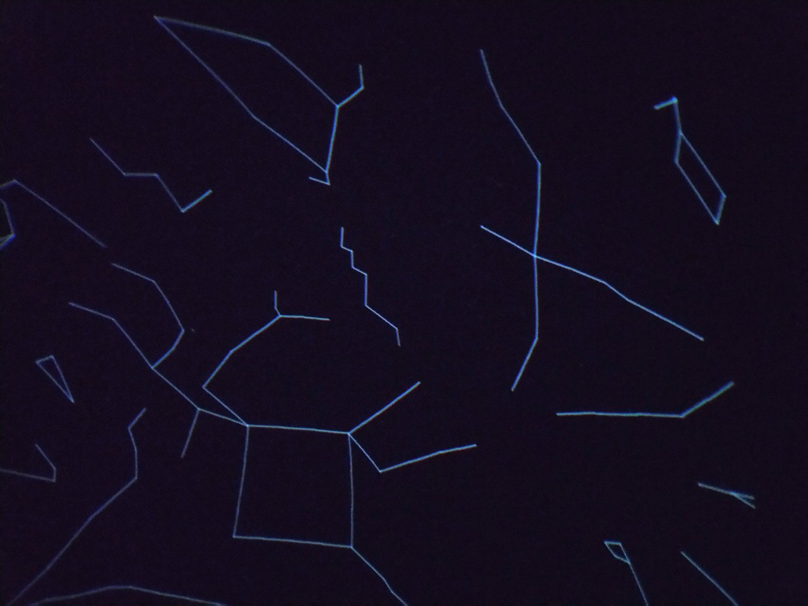

本日の星空
- 上映時間:約20分
- プラネタリウム
もし都会から明かりが消えたらどんな星空が見えるのだろうか。皆様はこんなことを思ったことはないでしょうか。このプログラムではその疑問に応えるべく、
上映日の夜の星空を紹介します。天気が良ければ、紹介した星々を実際に見ることができるかもしれません。さて、今日はどの惑星や星座が見えているのでしょうか...？
もし都会から明かりが消えたらどんな星空が見えるのだろうか。皆様はこんなことを思ったことはないでしょうか。このプログラムではその疑問に応えるべく、
上映日の夜の星空を紹介します。天気が良ければ、紹介した星々を実際に見ることができるかもしれません。さて、今日はどの惑星や星座が見えているのでしょうか...？